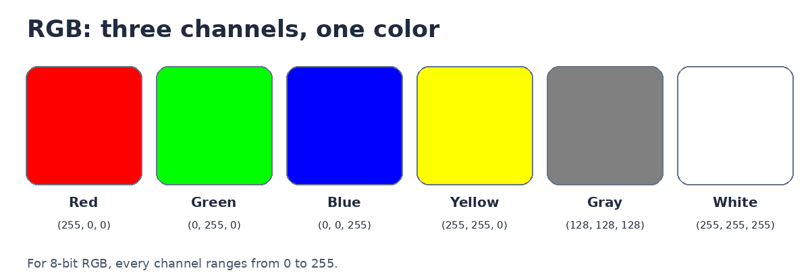
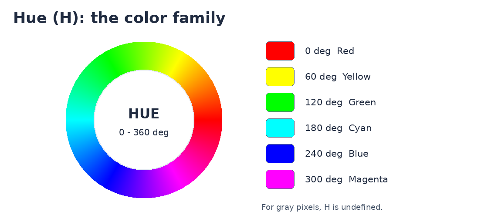
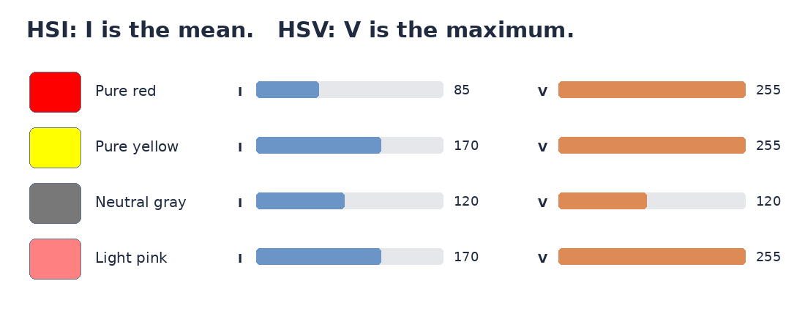
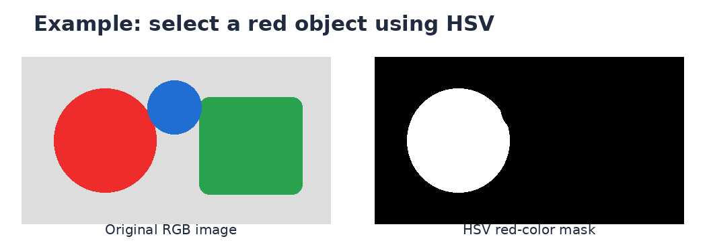

فصل ششم — آشنایی با سه فضای رنگ RGB، HSI و HSV#
هدف این فصل کوتاه: یاد بگیریم یک رنگ را چگونه با سه روش متفاوت توصیف کنیم. در اینجا از فرمولهای طولانی تبدیل رنگ و معرفی سایر فضاهای رنگ صرفنظر میکنیم.
۶.۱ RGB: رنگ از ترکیب سه نور#
در صفحهنمایش، هر نقطه (پیکسل) با سه مؤلفه مشخص میشود:
R(Red): مقدار نور قرمزG(Green): مقدار نور سبزB(Blue): مقدار نور آبی
در یک تصویر معمول ۸ بیتی در هر کانال، مقدار هر مؤلفه از 0 تا 255 است. برای مثال، (255, 0, 0) قرمز، (0, 255, 0) سبز و (0, 0, 255) آبی است. اگر قرمز و سبز هر دو زیاد باشند و آبی صفر باشد، رنگ زرد خواهیم داشت: (255, 255, 0).


Fig. 258 چند نمونه از ترکیب سه مؤلفهٔ RGB. سه عدد زیر هر رنگ بهترتیب مقادیر قرمز، سبز و آبیاند.#
نکته: وقتی سه مقدار برابر باشند، رنگی از طیف خاکستری داریم؛ مانند (120, 120, 120). هر سه مقدار صفر یعنی سیاه و هر سه مقدار 255 یعنی سفید.
۶.۲ چرا به HSI و HSV نیاز داریم؟#
فرض کنید میخواهیم از یک تصویر، تمام اشیای قرمز را جدا کنیم. کار با سه عدد R، G و B ممکن است، اما برای بیان «این پیکسل چه رنگی است؟» روش شهودیتری نیز داریم: رنگ را با نام رنگ، میزان رنگیبودن و میزان روشنایی توصیف کنیم. دو مدل HSI و HSV بر همین ایده بنا شدهاند.
H یا فام (Hue): چه رنگی میبینیم؟#
H زاویهای روی دایرهٔ رنگ، معمولاً از 0 تا 360 درجه است. برای رنگهای خالصِ زیر:
فام |
زاویهٔ تقریبی |
|---|---|
قرمز |
|
زرد |
|
سبز |
|
آبی |
|


Fig. 259 دایرهٔ فام: زاویه، خانوادهٔ رنگ را تعیین میکند؛ نه میزان روشنی آن را.#
در یک پیکسل کاملاً خاکستری، فام معنی ندارد؛ زیرا هیچ رنگی بر دیگری غالب نیست. در بعضی نرمافزارها برای سهولت مقدار H=0 ذخیره میشود، اما این به معنی قرمز بودن خاکستری نیست.
S یا اشباع (Saturation): رنگ چقدر خالص یا خاکستری است؟#
Sنزدیک صفر: رنگ به خاکستری نزدیک است.Sبزرگتر: رنگ پررنگتر و کمتر متمایل به خاکستری است.
مثلاً صورتی کمرنگ و قرمز زنده میتوانند فام قرمز داشته باشند، ولی اشباع آنها متفاوت است. S به معنی «تعداد رنگهای موجود در تصویر» نیست. تعریف و عدد اشباع در HSI و HSV دقیقاً یکسان نیست؛ هرچند تفسیر ابتدایی آنها مشابه است.
۶.۳ تفاوت اصلی HSI و HSV#
هر دو مدل از H و S استفاده میکنند، اما مؤلفهٔ سوم آنها متفاوت است:
HSI= Hue, Saturation, Intensity. مؤلفهٔIمیانگین سه کانالRGBاست: (I=(R+G+B)/3).HSV= Hue, Saturation, Value. مؤلفهٔVبزرگترین مقدار میان سه کانالRGBاست: (V=\max(R,G,B)).
در این دو رابطه فرض کردهایم R و G و B در بازهٔ 0 تا 255 هستند؛ بنابراین I و V نیز در همین بازهاند.
برای یک پیکسل قرمز خالص با RGB = (255, 0, 0):
در
HSI، مقدارI = 85است؛ چون میانگین سه عدد را گرفتهایم.در
HSV، مقدارV = 255است؛ چون بزرگترین کانال را انتخاب کردهایم.


Fig. 260 مقایسهٔ I و V برای چهار رنگ. طول هر نوار با مقدار عددی متناظر از 0 تا 255 متناسب است.#
پس I و V را نباید یک کمیت یکسان تصور کنیم. همچنین هیچکدام، بهتنهایی، اندازهگیری دقیق روشنایی ادراکشده توسط چشم انسان نیستند.
مدل |
پرسش سادهای که پاسخ میدهد |
استفادهٔ نمونه |
|---|---|---|
|
هر کانال نور چقدر است؟ |
نمایش و ذخیرهٔ تصاویر رنگی |
|
رنگ، اشباع و میانگین شدت کانالها چیست؟ |
تحلیل آموزشی مؤلفههای رنگ |
|
رنگ، اشباع و بیشترین مقدار کانال چیست؟ |
انتخاب و جداسازی سادهٔ رنگها |
۶.۴ یک کاربرد بسیار ساده: جداکردن شیء قرمز#
در مثال زیر، یک شکل قرمز، یک شکل سبز و یک شکل آبی روی پسزمینهٔ خاکستری داریم. با تبدیل هر پیکسل از RGB به HSV و انتخاب فام نزدیک به قرمز همراه با اشباع کافی، میتوانیم فقط ناحیهٔ قرمز را سفید و بقیه را سیاه کنیم.


Fig. 261 سمت چپ: تصویر مصنوعی آموزشی. سمت راست: ماسک بهدستآمده از شرط فام قرمز و اشباع کافی در فضای HSV.#
برای اجرای کد، فقط بستهٔ Pillow لازم است. برنامه با ماژول استاندارد colorsys پایتون نیز کار میکند:
دانلود کد کوتاه Python · دانلود Notebook · تصویر ورودی نمونه

تذکر: در تصاویر واقعی، تغییر نور، سایه و انعکاس میتواند مقدار رنگ را عوض کند؛ بنابراین انتخاب رنگ در HSV همیشه بیخطا نیست.
۶.۵ مرور در یک دقیقه#
اگر بخواهیم با سه کلمه این فصل را به خاطر بسپاریم: RGB یعنی مقدار سه نور؛ H یعنی خانوادهٔ رنگ؛ S یعنی میزان فاصله از خاکستری. مؤلفهٔ سوم در HSI میانگین و در HSV بیشینهٔ سه کانال است.
سه پرسش کوتاه:
چرا
(100, 100, 100)خاکستری است؟فام سبز و آبی خالص تقریباً چند درجه است؟
برای
(255, 0, 0)، چراI = 85ولیV = 255میشود؟
منبع پایه: Gonzalez & Woods, Digital Image Processing, 4th ed., بخش مربوط به پردازش تصویر رنگی. مثالها، شکلها و کد این جزوه برای آموزش مستقل تهیه شدهاند.